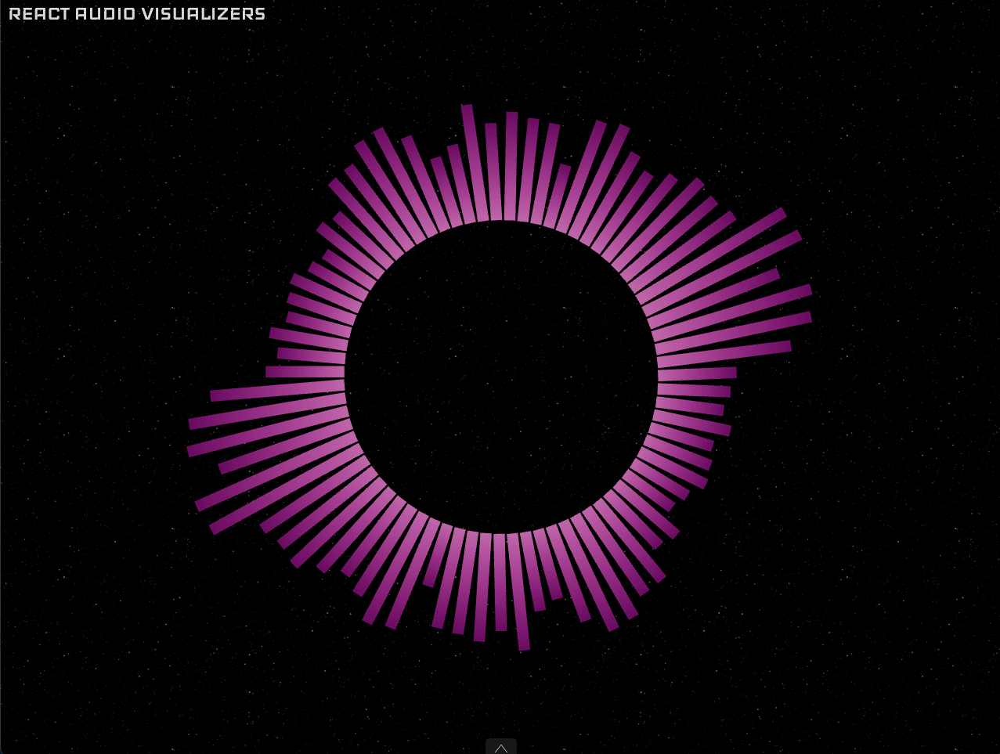

React Audio Visualizers
A library of audio visualizer components for React built with ThreeJS, through react-three-fiber, and the Web Audio API.

An audio visualizer (or music visualizer) generates animations in real time synchronized with the audio.
Check out the demo page for a live example.
Installation
React-audio-visualizers is available from npm. You can add it to your project using:
npm install react-audio-visualizers
#or
yarn add react-audio-visualizers
Usage
Here is an example of how to use a visualizer from react-audio-visualizers:
import React from 'react';
import ReactDOM from 'react-dom';
import { SpectrumVisualizer, SpectrumVisualizerTheme } from 'react-audio-visualizers';
function App() {
return (
<SpectrumVisualizer
audio="https://your.domain.com/yourAudioFile.mp3"
theme={SpectrumVisualizerTheme.radialSquaredBars}
colors={['#009688', '#26a69a']}
iconsColor="#26a69a"
backgroundColor="white"
showMainActionIcon
showLoaderIcon
highFrequency={8000}
/>
);
}
ReactDOM.render(<App />, document.querySelector('root'));
You can see all available visualizers on the menu. For each visualizer there’s a list of possible props and a description of what each prop does. There are some common props for each visualizer that come from the <AudioVisualizer> component, but for most visualizers the only required prop is the audio file (and the theme if the visualizer has multiple themes).
Pro
The library offers a pro version with some extra audio visualizers. Every visualizer that is only available in pro version is tagged with a label on the menu. Click here if you want to have access to this version.
Contributing
If you want to contribute there are many things you can do to help making react-audio-visualizers better.
You can open an issue on react-audio-visualizers repository if you found any bug, any possible improvement or have an idea for a new feature.
Another way to contribute is by fixing bugs on the project. Every pull request is welcome so check the list of open issues and maybe there’s something that you’d like to do there.
Finally, and the most fun thing to do, is to write your own visualizers. Check the tutorial on writing your own visualizers for more info and technical recommendations.
License
react-audio-visualizers is licensed under the MIT Licence.